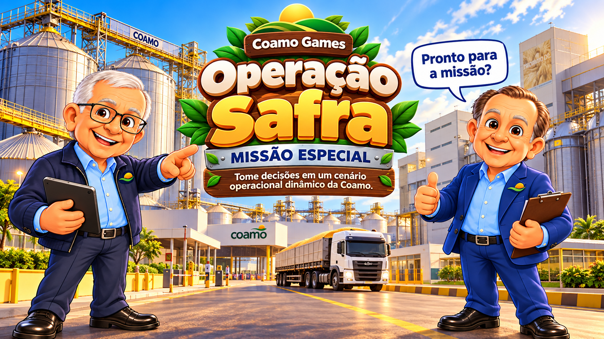

Preparado para comandar uma operação de safra?
SIMULAÇÃO INTERATIVA
Missão Coamo
Operação Safra · Decida, reaja aos imprevistos e equilibre quatro indicadores.
Aroldinho: segurança, qualidade, eficiência e atendimento contam pontos!

Seu desafio: equilibrar quatro resultados.
Não basta ser rápido. Cada decisão altera o desempenho da missão e muda sua pontuação final.
🛡SegurançaEvite decisões que aumentem o risco.
⭐QualidadePreserve produto e processo.
⚙EficiênciaMantenha o fluxo sem retrabalho.
🤝AtendimentoMantenha orientação e boa experiência.
Simulação educativa e institucional. As situações não representam procedimentos operacionais oficiais.